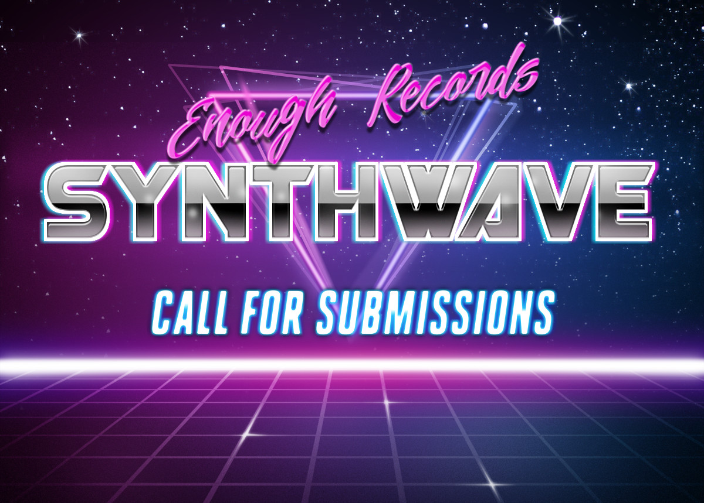

Call for Submissions
Enough Records is organizing a synthwave compilation to be released around June 2022.
Deadline for track submissions is April 30th 2022.
Track Genre
We are Looking for track submissions of synthwave genre from both our current artist roster and guest artists (if you know someone that might be interested, feel free to pass this link to them), the track doesn't need to be in the strict genre definition of synthwave, we also accept synthpop, retrowave, darkwave, vaporwave, doskpop and any other borderline genre vaguely related to synthwave - as long as we can manage to fit the track into the mix without it standing out too much it's a welcome submission.
Release Format
The compilation will be released in a mix format with all the tracks together and also with the tracks individually available (similar to what we recently did with Dark Vault 3.
Sampling Allowed?
We're looking for original works. Minor copyrighted sampling is allowed as long as you either have permission to sample or provide us with both a copyright sensitive and copyright clean version of the track, the clean version will be used on the platforms that are more strict with sampling copyright. Remixes require permission from the original artist.
Track Exclusivity?
Your submission does not have to be an exclusive track for Enough Records but please be aware that it will be distributed under our usual release terms (creative commons by-nc-sa, free for download where possible, also present on a few commercial platforms at lowest price possible, royalty share via routenote platform is available if you're interested), if the track is not exclusive to Enough Records, it's fine with us that you have it licensed or available for download/stream/sale somewhere else but please make sure that these terms of release are not incompatible with whatever other use your track might have.
How to Submit
Deadline for track submissions is April 30th 2022.
Please send your track submissions via wetransfer or dropbox, David Hasselhoff kills a kitten when someone attaches large binaries to an email.
Track should be submitted as flac or wav in whatever resolution you usually work on. If possible send us both a mastered and unmastered versions. We will do final mastering and global normalization of the tracks and send you preview for you to validate a few weeks before the release date.
Contact
If you're interested in submitting a track, please try to respect the deadline or contact us for an extension, so we can keep track of things pending.
Contact for submissions: ps@enoughrecords.org